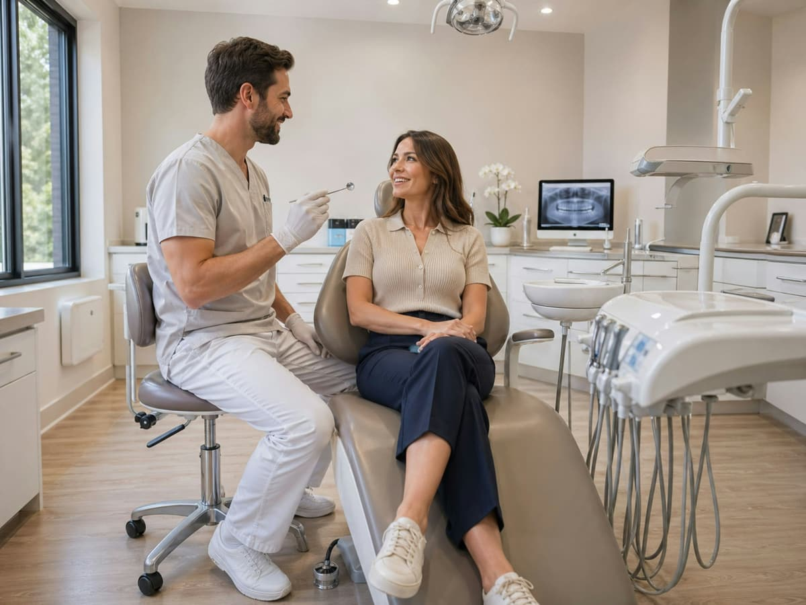
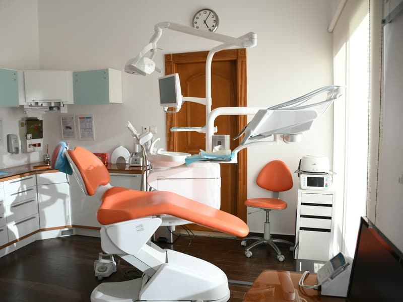
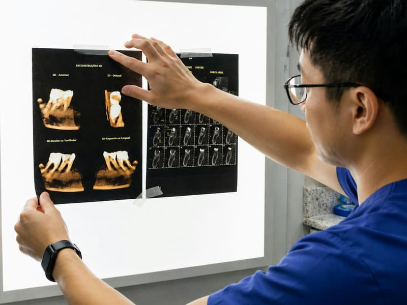

Przegląd i konsultacja
Badanie, zdjęcie RTG jeśli potrzebne, plan leczenia na piśmie
30 min150 zł
Stomatolog · Kielce
Gabinet na Zagórskiej. Jedna osoba na jednej godzinie — bez nakładania wizyt i bez leczenia w biegu.
Gabinet prywatny. Nie mamy kontraktu z NFZ.
Zabiegi
Ceny są widełkowe, bo zakres ustala się dopiero po obejrzeniu i zdjęciu RTG. Plan leczenia i kosztorys dostajesz na piśmie przed rozpoczęciem.
Badanie, zdjęcie RTG jeśli potrzebne, plan leczenia na piśmie
30 min150 zł
Skaling, piaskowanie, polerowanie i fluoryzacja
45 min300 zł
Ubytek opracowany i wypełniony kompozytem, dobór koloru
45 min300 – 450 zł
Pod mikroskopem, z kontrolą RTG. Cena zależy od liczby kanałów
60 – 90 min700 – 1400 zł
Wycisk cyfrowy, korona pełnoceramiczna, dwie wizyty
2 wizyty1500 – 2200 zł
Znieczulenie, zabieg, kontrola po tygodniu
30 – 60 min300 – 700 zł
Adaptacja, przegląd i lakowanie. Pierwsza wizyta bez zabiegu
30 min150 zł
Zespół
Numery prawa wykonywania zawodu są jawne i można je sprawdzić w rejestrze Naczelnej Izby Lekarskiej.
Stomatologia zachowawcza z endodoncją
Absolwentka UM w Lublinie. Pracuje pod mikroskopem od 2016 roku.
PWZ 0000000Protetyka i implantologia
Absolwent UM w Łodzi. Prowadzi leczenie protetyczne i wszczepy.
PWZ 0000000Stomatologia dziecięca
Absolwentka UJ CM. Przyjmuje dzieci od trzeciego roku życia.
PWZ 0000000Numery PWZ są w wersji pokazowej wyzerowane — u realnego gabinetu wpisujemy prawdziwe.
Pierwsza wizyta
Pytamy, co Cię boli i czego się obawiasz. Bez oceniania stanu uzębienia.
Przegląd i zdjęcie RTG, jeśli jest potrzebne do postawienia diagnozy.
Dostajesz plan leczenia z kosztorysem na piśmie. Do domu, do przemyślenia.
Zaczynamy dopiero wtedy, gdy zgadzasz się na zakres i cenę.
Pytania
Nie. Gabinet jest w pełni prywatny — nie mamy kontraktu z Narodowym Funduszem Zdrowia. Mówimy o tym od razu, żeby nikt nie przyjechał na darmo.
Powiedz o tym przy zapisie. Pierwszą wizytę możemy ograniczyć do rozmowy i przeglądu, bez żadnego zabiegu. Dla wielu osób to wystarcza, żeby wrócić na drugą.
Od 700 do 1400 zł, zależnie od liczby kanałów w zębie. Dokładną kwotę podajemy po zdjęciu RTG, przed rozpoczęciem leczenia.
Przy leczeniu rozłożonym na kilka wizyt płaci się za każdą wizytę osobno. Przy większych planach protetycznych ustalamy harmonogram indywidualnie.
W soboty przyjmujemy do 13:00. Poza godzinami pracy najbliższy dyżur stomatologiczny działa przy szpitalu — numer podajemy w nagraniu na naszej poczcie głosowej.
Od trzeciego roku życia. Pierwsza wizyta dziecka to zawsze adaptacja — oglądamy gabinet, liczymy zęby, nic nie robimy na siłę.
Umów wizytę
Zostaw kontakt i powód wizyty. Oddzwaniamy w godzinach pracy gabinetu i proponujemy termin.

O nas
Prowadzimy gabinet tak, żeby nikt nie siedział w poczekalni pół godziny po swojej godzinie. Wizyty nie nakładają się na siebie, więc jeśli coś trwa dłużej, nie kosztuje to czasu następnego pacjenta.
Nie sprzedajemy pakietów i nie proponujemy zabiegów, których nie potrzebujesz. Jeśli ząb da się uratować, mówimy to. Jeśli nie da się — też.


Opinie
Pierwszy gabinet, w którym nie usłyszałam, że zaniedbałam zęby. Po prostu ustalono, co po kolei zrobić.
Agnieszka · Google
Kosztorys dostałem na kartce przed leczeniem i na koniec zapłaciłem dokładnie tyle.
Tomasz · Google
Córka ma pięć lat i sama prosi, żeby iść na kontrolę. Nie wiem, jak to zrobili.
Monika · Facebook
Zdjęcia ilustracyjne na wolnej licencji (Unsplash). Pełna lista autorów: CREDITS.md.
Kontakt
Rejestracja telefoniczna działa w godzinach pracy gabinetu. Poza nimi zostaw wiadomość — oddzwaniamy rano.
Wyznacz trasę| Dzień | Przyjęcia | Rejestracja telefoniczna |
|---|---|---|
| Poniedziałek | 9:00 – 18:00 | 8:30 – 18:00 |
| Wtorek | 9:00 – 18:00 | 8:30 – 18:00 |
| Środa | 9:00 – 18:00 | 8:30 – 18:00 |
| Czwartek | 9:00 – 18:00 | 8:30 – 18:00 |
| Piątek | 9:00 – 16:00 | 8:30 – 16:00 |
| Sobota | 9:00 – 13:00 | 8:30 – 13:00 |
| Niedziela | Zamknięte | Zamknięte |
Rejestracja telefoniczna działa w godzinach pracy gabinetu. Poza nimi zostaw wiadomość — oddzwaniamy rano.